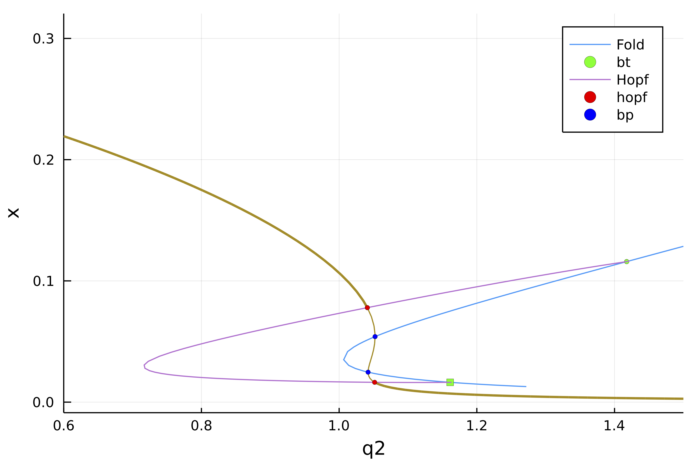

CO-oxydation (codim 2)
In this tutorial, we study the Bykov–Yablonskii–Kim model of CO-oxydation (see [Govaerts]). The goal of the tutorial is to show in a simple example how to perform codimension 2 bifurcation detection.
\[\left\{\begin{array}{l}\dot{x}=2 q_{1} z^{2}-2 q_{5} x^{2}-q_{3} x y \\ \dot{y}=q_{2} z-q_{6} y-q_{3} x y \\ \dot{s}=q_{4} z-k q_{4} s\end{array}\right.\tag{E}\]
Where $z=1-x-y-s$.
We start with some imports that are useful in the following.
using Revise, ForwardDiff, Parameters, Setfield, Plots, LinearAlgebra
using BifurcationKit
const BK = BifurcationKit
# define the sup norm
norminf = x -> norm(x, Inf)Problem setting
We can now encode the vector field (E) in a function and use automatic differentiation to compute its various derivatives.
# vector field of the problem
function COm(u, p)
@unpack q1,q2,q3,q4,q5,q6,k = p
x, y, s = u
z = 1-x-y-s
out = similar(u)
out[1] = 2q1 * z^2 - 2q5 * x^2 - q3 * x * y
out[2] = q2 * z - q6 * y - q3 * x * y
out[3] = q4 * z - k * q4 * s
out
end
# jacobian
dCOm = (z, p) -> ForwardDiff.jacobian(x -> COm(x, p), z)
# we group the differentials together
jet = BK.get3Jet(COm, dCOm)
# parameters used in the model
par_com = (q1 = 2.5, q2 = 0.6, q3 = 10., q4 = 0.0675, q5 = 1., q6 = 0.1, k = 0.4)
# initial condition
z0 = [0.07,0.2,05]Continuation and codim 1 bifurcations
Once the problem is set up, we can continue the state w.r.t. $q_2$ to and detect codim 1 bifurcations. This is achieved as follows:
# continuation parameters
opts_br = ContinuationPar(pMin = 0.6, pMax = 1.9, ds = 0.002, dsmax = 0.01,
# options to detect codim 1 bifurcations using bisection
detectBifurcation = 3,
# Optional: bisection options for locating bifurcations
nInversion = 6, maxBisectionSteps = 25,
# number of eigenvalues
nev = 3)
# compute the branch of solutions
br, = continuation(jet[1], jet[2], z0, par_com, (@lens _.q2), opts_br;
printSolution = (x, p) -> (x = x[1], y = x[2]),
plot = true, verbosity = 3, normC = norminf)
# plot the branch
scene = plot(br, xlims=(0.8,1.8))Continuation of Fold points
We follow the Fold points in the parameter plane $(q_2, k)$. We tell the solver to consider br.specialpoint[2] and continue it.
sn_codim2, = continuation(jet[1:2]..., br, 2, (@lens _.k),
ContinuationPar(opts_br, pMax = 2.2, pMin = 0., ds = -0.001, dsmax = 0.05);
normC = norminf,
# detection of codim 2 bifurcations with bisection
detectCodim2Bifurcation = 2,
# we save the first component for plotting
printSolution = (u,p; kw...) -> (x = u.u[1] ),
# we update the Fold problem at every continuation step
updateMinAugEveryStep = 1,
# compute both sides of the initial condition
bothside=true,
# use this linear bordered solver, better for ODEs
bdlinsolver = MatrixBLS())
scene = plot(sn_codim2, vars=(:q2, :x), branchlabel = "Fold")
plot!(scene, br, xlims=(0.8,1.8))Continuation of Hopf points
We tell the solver to consider br.bifpint[1] and continue it.
hp_codim2, = continuation(jet[1:2]..., br, 1, (@lens _.k),
ContinuationPar(opts_br, pMin = 0., pMax = 2.8,
ds = -0.001, dsmax = 0.05) ;
normC = norminf,
# detection of codim 2 bifurcations with bisection
detectCodim2Bifurcation = 2,
# this is required to detect the bifurcations
d2F = jet[3], d3F = jet[4],
# tell to start the Hopf problem using eigen elements: compute left eigenvector
startWithEigen = true,
# we save the first component for plotting
printSolution = (u,p; kw...) -> (x = u.u[1] ),
# we update the Hopf problem at every continuation step
updateMinAugEveryStep = 1,
# compute both sides of the initial condition
bothside = true,
# use this linear bordered solver, better for ODEs
bdlinsolver = MatrixBLS(),
)
# plotting
scene = plot(sn_codim2, vars=(:q2, :x), branchlabel = "Fold")
plot!(scene, hp_codim2, vars=(:q2, :x), branchlabel = "Hopf")
plot!(scene, br, xlims=(0.6,1.5))
References
- Govaerts
Govaerts, Willy J. F. Numerical Methods for Bifurcations of Dynamical Equilibria. Philadelphia, Pa: Society for Industrial and Applied Mathematics, 2000.